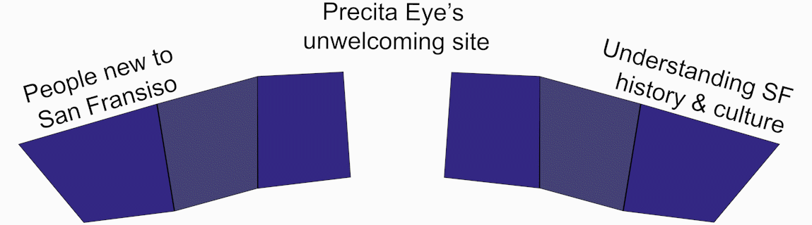
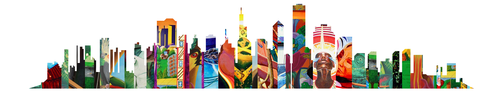

5 Team members
3 Weeks
1 non-Profit
Precita eyes is a community that can introduce new arrivals to San Francisco bay culture and history. However, their original web layout does not communicate their mission but puts the burden of research on visitors. It also fails to present their art desirably. This poor design breaks the connection point between potential members and a thriving community. With this data, we created a problem statement.
"San Francisco transplants feel disconnected from the local community, and worry about their role in its gentrification and cultural dilution."
San Francisco is a very diverse places, many cultures and backgrounds combine to create a unique city. As many middle-class Americans move to the SF bay, they take the homes of low income residents, diluting local culture. This mural arts community celebrates and visualizes The Bay's culture; transplants that want to understand their new homes can participate through art.
User testing insight
User testing insight
User testing insight
We conducted user tested to better understand what was or wasn't working with their website. Based on our user testing we made four guidelines that would define a successful redesign:
original logo
redesigned logo
Muralistic elements reference Precita’s work, keeping the art in focus from the beginning. This is the first step that helped define the style for full pages throughout the rest of the redesign.
These were the next elements to be developed and influenced the final design across the rest of the site- vibrant imagery cleanly presented to not take focus away from the art.
We remove nested navigation, trading fewer levels for more scrolling. Long and nested dropdown menus confused users and undermined their confidence. Next we experimented with different ways to present the art. This S-shaped layout breaks information and artwork into bite sized chucks for new visitors to take in and quickly understanding what each page offers. These wireframes have been remade after settling on this design. Each team member explored a different layout options until we saw a common theme we agreed on. Here are several look and feel explorations including a dark theme.
An example of the nested navigation we removed
Medium fidelity wireframe of our new murals spotlight
tours page third design exploration
Medium fidelity wireframe of the redesigned mural gallary
tours page first design exploration
tours page second design exploration
User interviews
Storyboarding
Usability testing
look & feel design
User journey mapping
Lo-Hi fi wireframes
Tours page
Art cityscape asset